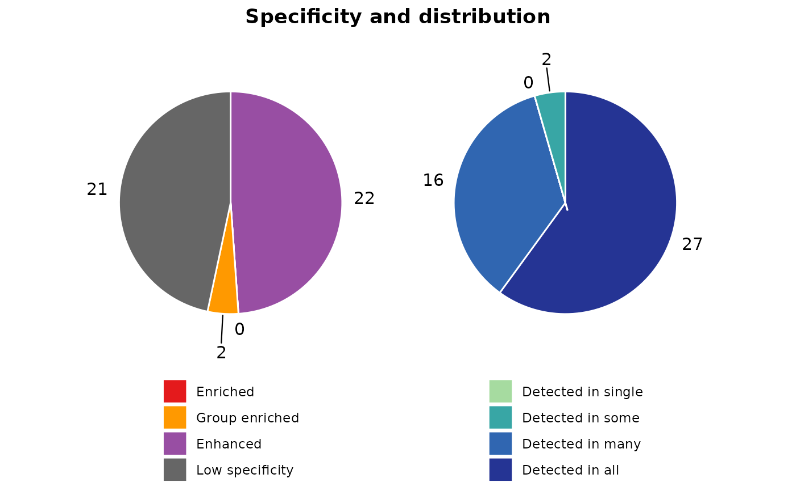

Perform sample category gene classification (HPA logic, sample-agnostic)
Source:R/hc_classify.R
hc_classify.Rdhc_classify classifies genes based on their expression patterns across different sample categories
using a logic similar to that employed by the Human Protein Atlas (HPA). The function processes
each cluster of genes identified in the AnnDatR object and categorizes them into specificity categories
such as "Enriched", "Group enriched", "Enhanced", and "Low specificity". It also generates pie charts to visualize
the distribution of these categories within each cluster.
Usage
hc_classify(
AnnDatR,
sample_categories,
cutoff_detected = 1,
lowest_exp_limit = 0.1,
group_enriched_limit = NULL,
fold = 4
)Arguments
- AnnDatR
AnnDatR object containing gene expression data and sample annotations
- sample_categories
Name of the column in AnnDatR$var containing sample categories
- cutoff_detected
Expression value threshold to consider a gene as detected (default: 1)
- lowest_exp_limit
Minimum expression value to consider for calculations (default: 0.1)
- group_enriched_limit
Maximum number of sample categories for group enriched classification (default: NULL, auto-calculated)
- fold
Fold change threshold for classification (default: 4)
Value
A tibble with gene classification results including ENSG, specificity category, specific sample categories, tau value, and distribution category
Examples
# Run clustering pipeline
adata_res <- hc_pca(example_adata, components = 40)
adata_res <- hc_distance(adata_res, components = 20)
adata_res <- hc_snn(adata_res, neighbors = 15)
#> Building SNN based on a provided distance matrix
#> Computing SNN
adata_res <- hc_cluster_consensus(adata_res, resolution = 7)
#> Iteration: 0 *** value: 948.279
#> Iteration: 1 *** value: 70.5063
#> Iteration: 2 *** value: 22.246
#> Iteration: 3 *** value: 22.2447
#> Iteration: 4 *** value: 22.2447
#> Minimum: 22.2447
#> Joining with `by = join_by(cons_cluster)`
# Classify genes based on sample categories
gene_classification <- hc_classify(adata_res, "tissue_name")
head(gene_classification$classification[["1"]])
#> # A tibble: 6 × 5
#> ENSG spec_category spec_sample_categories tau dist_category
#> <chr> <chr> <chr> <dbl> <chr>
#> 1 ENSG00000072501 Low specificity NA 0.35 Detected in all
#> 2 ENSG00000072736 Enhanced thymus 0.51 Detected in all
#> 3 ENSG00000077147 Low specificity NA 0.28 Detected in all
#> 4 ENSG00000078177 Enhanced thymus 0.64 Detected in many
#> 5 ENSG00000100629 Enhanced thymus 0.74 Detected in many
#> 6 ENSG00000101868 Enhanced thymus 0.51 Detected in many
gene_classification$pie_charts[["1"]]
